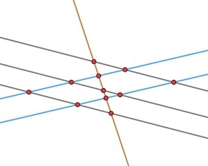

Can there exist 100 lines in the plane, no three concurrent, such that they intersect in exactly 2002 points?
Yup.
This looks like a geometry problem, right? It’s not. It’s a problem in number theory. The geometry part is almost entirely a red herring.
You see, when you have lines in the plane, any two lines intersect either once or not at all, with “not at all” happening exactly when they are parallel. The number of meeting points is, therefore, just the number of pairs of non-parallel lines.
Oh, may we be double-counting points where multiple lines meet? No worries, this isn’t occurring here: we are told that no three lines are concurrent. Every meeting point is on just two lines.
So, the actual arrangement of the lines in the plane is immaterial. The only thing that matters is how they are grouped into batches of parallel lines (called “pencils”). Other than this, how the lines are oriented and the distances between them make no difference whatsoever.
If we only had six lines, we could (for example) arrange them as three pencils: three parallel ones, another parallel pair in a different direction, and a single line not parallel to either of those. We would then have 11 meeting points: 3\times 2+3\times 1+2\times 1.

(Pencils of 3, 2 and 1 lines yield 11 intersections).
Observe how, once the grey and blue pencils are in place, it doesn’t matter at all where the orange line is placed. It just needs to have a new direction, and not to pass through any of the existing intersections. Wherever it is, there will be exactly 11 intersections.
In our case, we need to group our lines into pencils of unknown sizes a_1,a_2,\ldots,a_k. The total number of lines in the pencils is 100=a_1+\ldots+a_k, and the number of intersection points needs to be 2002=P=\sum_{i<j} a_i a_j. The number of variables, k, is also up to us.
The question is, therefore, can we come up with such positive integers? If we can solve this diophantine question, we can solve the problem just by laying down pencils of the required magnitudes. If the diophantine question has no solution, the arrangement of lines cannot exist.
So: are there positive integers which add up to 100 and whose pairwise products add up to 2002?
To answer this, I made a small algebraic change. The pairwise sum is reminiscent of the formula for the squared sum (a_1+\ldots+a_k)^2. Indeed,
\displaystyle (a_1+\ldots+a_k)^2=S+2P
Where S=\sum a_i^2 is the sum of squares and P is the sum of pairwise products. We know that this is 100^2, so the sum of squares S must be 100^2-2\times 2002=5996.
Our diophantine question has changed to finding positive integers a_1,\ldots,a_k whose sum is 100 and whose sum of squares is 5996.
My first assumption was that such numbers do not exist, but I couldn’t see why. The parity works fine, the magnitude is reasonable, and I’m still curious if there is a good set of criteria for checking if a sum of squares is feasible given the sum. At any rate, this isn’t an issue here.
At some point I decided to just go greedy and write 5996 as a sum of squares of numbers which add up to 100. By “greedy” I meant to start with the largest square I can and go from there.
I was in the theater while solving this. My son is playing Samuel in the local youth theater’s performance of Pirates of Penzance, and when he wasn’t on stage I indulged in a bit of calculating. I figured that 76^2=5776 is the largest square smaller than 5996, which is incorrect, but I hadn’t noticed. I was happy to see that the difference is 220 and the remainder to 100 is 24, which seemed like nice numbers, so I stuck with them.
Now I had to make 220 a sum of squares of numbers which add up to 24. Being greedy once again (this time correctly) I started with 14^2=196, leaving 24 for the sum of squares and 10 for the sum. I went with 4^2=16, and it was plain sailing from here.
So, the numbers (76,14,4,2,1,1,1,1) have sum 100 and sum of squares 5996, just like we need. The problem is solved, in the positive: make 76 parallel lines in some direction, 14 other parallel lines in another direction, then 4, then 2, and then four individual lines in four random directions not parallel to anything else. The number of intersection points is going to be 2002.
Had I been more careful, I would have noticed that 77^2<5996, so we can try writing the difference 67 as a sum of squares of numbers adding up to 23. Greedily taking 7^2=49 as our next number leaves us with square-sum 18 and sum 16. You do not want to be greedy now: taking 4^2=16 leaves you with too many leftover numbers. Instead, just take 14 1's and a single 2. So another solution is (77,7,2,1,\ldots,1) with fourteen 1's. There are many other solutions.